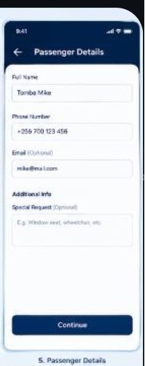

JOURNEY STATUS
Live tracking
Kampala → Gulu · Modern Coast (sample)
KampalaGulu
Estimated arrival 03:00 PMCurrent location Near Masindi (sample)Progress On route
This gallery map is illustrative. Live tracking requires an active trip in the connected app; there is no real vehicle GPS in V1.
